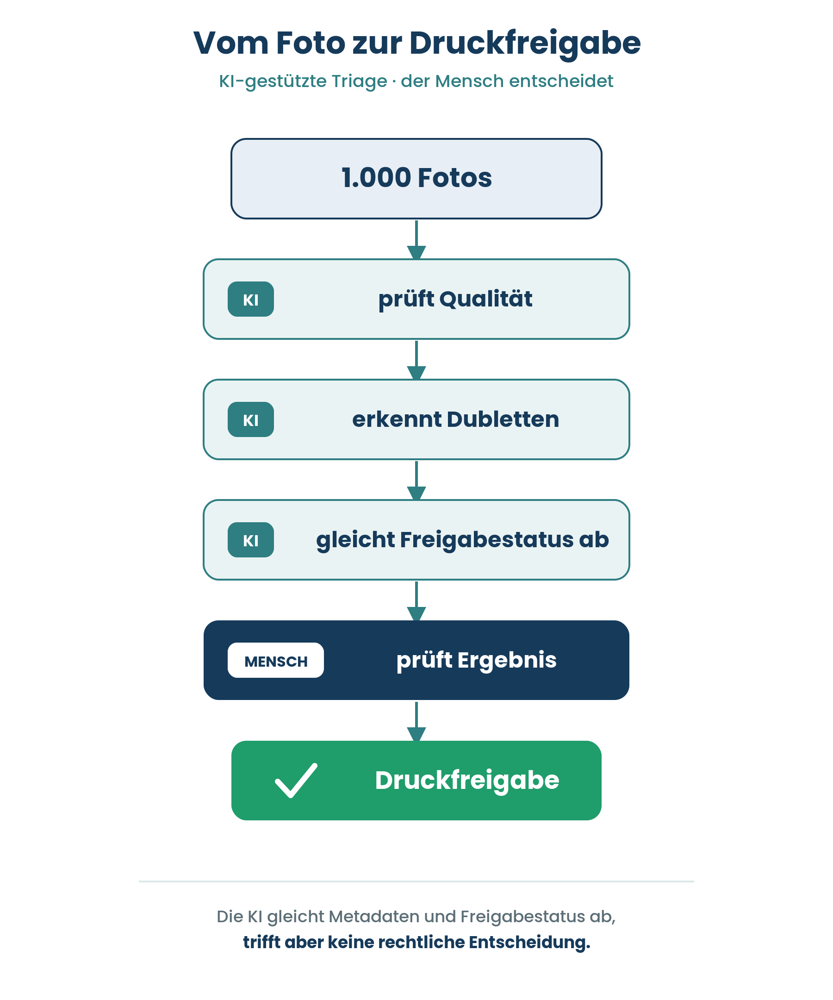
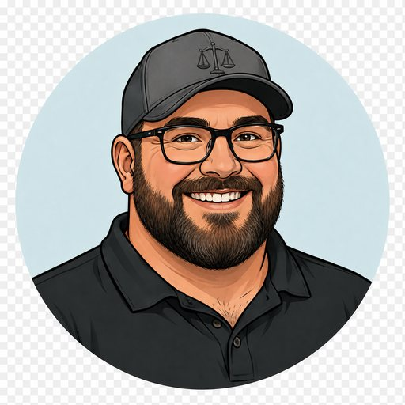
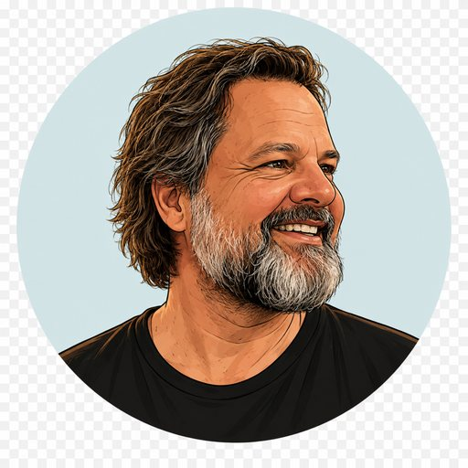

Hohe Betroffenheit · niedriger Einfluss
Besonders schützen
Kinder / Schüler:innen

Safe Frames überführt den unstrukturierten, datenschutzrechtlich riskanten Umgang mit Schülerfotos in einen dokumentierten, prüfbaren Arbeitsprozess – speziell für schulische Printprodukte wie Jahrbücher und Abschlusszeitungen.
Safe Frames ist das erste Produkt der Marke ilumera, entstanden im Rahmen der TÜV-Weiterbildung „KI-Manager mit Projekt". Stand: Konzept-/MVP-Definition, keine öffentliche Produktfreigabe.
Prozessbasierte Ordnerstruktur, Vier-Augen-Prinzip und klares Löschkonzept – bewusst mit Biometrie für gute Ergebnisse im Bilderabgleich.
KI sortiert große Bildmengen nach Qualität, Dubletten und Kontext vor und gleicht den Einwilligungsstand ab – der Mensch entscheidet final, welches Bild er nimmt.
Nur geprüfte Bilder gelangen ins Druckpaket. Weniger Aufwand, weniger Fehldrucke, mehr Vertrauen bei Eltern und Schule.

„Safe Frames schafft den sicheren Rahmen für Erinnerungen."
Rechtssicherheit und Struktur für einen prüfbaren, dokumentierten Prozess.
Emotionaler Mehrwert statt reiner Funktion – Klassenfotos bleiben erhalten.
Fünf Menschen, ein Ziel: Schulfotografie verantwortungsvoll, digital und sicher zu gestalten – mit technischer Kompetenz, rechtlichem Know-how und Praxiserfahrung. In der Präsentation übernimmt jede:r einen eigenen Redepart.


Wir entwickeln Safe Frames als verantwortungsvolle Lösung für den sensiblen Umgang mit Schulfotos.
Schülerfotos sind personenbezogene Daten im Sinne der DSGVO. In der Praxis werden sie häufig unstrukturiert verarbeitet – über Messenger-Gruppen, private Geräte und unkontrollierte Cloud-Dienste. Einwilligungen, Freigabestände und Löschfristen bleiben oft undokumentiert.
Fotos landen auf privaten Geräten, in Messenger-Gruppen oder unkontrollierten Clouds – ohne klaren Sortier- und Prüfprozess.
Einwilligungen müssen individuell geprüft werden; Freigabestände und Löschfristen werden selten systematisch festgehalten.
Printprodukte lassen sich nicht zurückholen – ein Fehler bei der Freigabe wirkt dauerhaft und erzeugt Haftungs- und Reputationsrisiko.
| Ebene | Beschreibung | Größe |
|---|---|---|
| TAM | Alle Schulen in Deutschland (~40.000), ~11,5 Mio. Schüler:innen. | ≈ 40.000 |
| SAM | Schulen mit regelmäßigen Print-/Jahrbuchprojekten & Datenschutz-Sensibilität. | ≈ 12–18 Tsd. |
| SOM | In 3 Jahren über Direktansprache & Partnerkanäle erreichbar. | ≈ 300–1.500 |
| Anbietertyp | Lücke gegenüber Safe Frames |
|---|---|
| Schulfotografie | Kein schulinterner Sortier-/Freigabeprozess für Print |
| DSGVO-Fotoplattformen | Primär Elternkommunikation, nicht Druckproduktion |
| Fotografen-Plattformen | Nicht auf schulische Eigenproduktion ausgerichtet |
| Fotoverwaltung | Datenschutz-Sortierung für Minderjährige kaum abgebildet |
| Erlösmodell | Annahme (Modell) |
|---|---|
| Prozess-/Schullizenz pro Jahr | 290–890 €/Jahr |
| Projekt- / Jahrbuchpaket | 150–400 €/Projekt |
| B2B2C-Partnerlizenz | Volumen-/Umsatzanteil |
| Setup & Beratung (einmalig) | 500–2.000 € |
| Szenario (Jahr 3) | Kundenbasis | Jahresumsatz |
|---|---|---|
| Konservativ | 150 Schulen | ≈ 60.000 € |
| Basis | 600 Schulen | ≈ 270.000 € |
| Optimistisch | 1.500 + Partner | ≈ 850.000 €+ |
Safe Frames macht aus einer rechtlichen Grauzone einen prüfbaren Prozess – durch bewusste Architekturentscheidungen auf einer soliden, ermöglichenden juristischen Basis.
Schülerfotos = sensible Daten Minderjähriger. Unstrukturierte Verarbeitung, undokumentierte Einwilligungen, irreversibler Druck.
Biometrie ohne Profil: Session-only-Abgleich, Vier-Augen-Prinzip, lokale Verarbeitung, klares Löschkonzept – kein dauerhaftes Gesichtsprofil.
AI-Act-Risiko ehrlich als hoch eingeordnet und konform getragen. DSGVO durch Session-only ohne Profilbildung beherrscht. Pilotreif.
Jede Challenge ist adressiert: kein offenes Risiko, sondern ein gestalteter Prozess.
| ⚠ Herausforderung | ✓ Lösung in Safe Frames | Norm |
|---|---|---|
| Sensible Daten Minderjähriger Besonders schutzwürdig (Art. 9 DSGVO) | Biometr. Abgleich nur in der Session (RAM) · kein dauerhaftes Profil · keine Personenzuordnung | Art. 9 |
| Einwilligung & Rechtsgrundlage Gültige Basis je Kind erforderlich | Consent-Reconciliation: OCR-Abgleich Formulare ↔ Klassenliste | Art. 6–8 |
| Zweckbindung & Minimierung Nur fürs konkrete Printprodukt | Verarbeitung projektgebunden · lokal · Embeddings nach Session verworfen | Art. 5 |
| Speicherbegrenzung & Löschung Nicht länger als nötig | Lösch-/Archivierungsprozess mit Fristen · Zeit-Trigger hinterlegbar | Art. 5, 17 |
| Irreversibler Druck Fehler im Print sind dauerhaft | Vier-Augen-Prinzip verpflichtend vor jeder Druckfreigabe | TOM |
| Nachweis & Rechenschaft Verarbeitungen dokumentieren | Dokumentierte Freigaben/Ausschlüsse · Grundlage für VVT-Eintrag | Art. 30 |
Der biometrische Abgleich findet statt – aber er hinterlässt kein Profil und keine Zuordnung.
Embeddings werden flüchtig im Arbeitsspeicher berechnet – Positivabgleich gegen eingewilligte Referenz.
Vier-Augen-Prinzip: jede Zuordnung wird gesichtet, bevor ein Bild übernommen wird.
Alle biometrischen Vergleichswerte werden verworfen. Kein Profil, keine Identitätszuordnung bleibt.
Wir beanspruchen kein geringes Risiko – wir ordnen ehrlich ein und erfüllen die Pflichten.
Dokumentiertes System je Projektsaison – Risiken benannt und gemindert.
ErfülltDigiKam-Version, Modell, Genauigkeit, Grenzen schriftlich festgehalten.
In ArbeitVier-Augen-Prinzip – KI assistiert, der Mensch entscheidet jede Freigabe.
ErfülltEltern & Schule wissen, dass KI eingesetzt wird – Infoblatt deckt es ab.
ErfülltNiedriger Confidence-Schwellenwert dokumentiert.
In ArbeitEintrag in EU-Datenbank vor Produktivbetrieb – Frist August 2026.
GeplantSensible Kinderdaten, unstrukturierte Prozesse, irreversibler Druck – alle Risiken benannt.
DSGVO-Grundsätze in Prozess übersetzt: Consent-Reconciliation, Vier-Augen, Löschkonzept.
Hohes Risiko nach Anhang III korrekt benannt und konform getragen – keine Schönfärberei.
Biometrischer Abgleich nur in der Session – keine dauerhafte Speicherung, keine Personenzuordnung, kein Profil.
„Safe Frames schafft den sicheren Rahmen für Erinnerungen."
Jede Prüfung endet beim Landesrecht: Welche Normen & Gremien das Projekt tragen müssen.
§ 63a SächsSchulG
Datenschutz-Sonderregelungen für Schulen – Ermächtigungsgrundlage des Kultusministeriums.
VwV Schuldatenschutz
Maßgebliche Verwaltungsvorschrift (Stand 12/2025) inkl. verpflichtendem Einwilligungsmuster (Anlage 2).
§ 43 SächsSchulG
Schulkonferenz als Gremium – kann den Rahmen für Foto-/KI-Einsatz beschließen und legitimieren.
§ 23 + § 22 KUG
Veranstaltungs-/Festfotos mit Beiwerk → § 23 (ohne Einwilligung). Erkennbares Kind als Motiv → § 22 (Einwilligung).
Einwilligung nach VwV-Muster (Anlage 2) für erkennbare Einzelabbildungen
Beiwerk (§ 23) vs. Motiv (§ 22) je Bild bewerten – menschliche Wertung
Schulkonferenz-Beschluss zum KI-/Foto-Einsatz herbeiführen (§ 43)
Schulischen Datenschutzbeauftragten einbinden – VVT-Eintrag (Art. 30)
Löschung nach Aufbewahrungsfrist – VwV Aufbewahrung schulischer Unterlagen
Schulleitung verantwortlich – Pilot über Schulträger Stadt Leipzig
Interesse, Einfluss, Betroffenheit und Umgang je Gruppe.
| Stakeholder | Interesse / Erwartung | Einfluss | Betroffenheit | Umgang |
|---|---|---|---|---|
| Kinder | Schutz, Privatsphäre, keine ungewollte Veröffentlichung | niedrig | sehr hoch | Besonders schützen, nicht belasten |
| Eltern | Kontrolle, Transparenz, Vertrauen | hoch | sehr hoch | Infos, Einwilligung, FAQ |
| Lehrkräfte | Einfache sichere Nutzung im Alltag | hoch | hoch | Schulung, Checklisten, klare Regeln |
| Leitung | Rechtssicherheit, Prozesssicherheit | sehr hoch | hoch | Briefing, Verantwortlichkeiten |
| Datenschutz | DSGVO, Löschung, Nachweisbarkeit | sehr hoch | hoch | Früh einbinden, dokumentieren |
| Verwaltung | Ablage, Zugriff, Organisation | mittel | hoch | Ordnerstruktur, Leitfaden |
| Dienstleister | Übergabe, Rechte, Anforderungen | mittel | mittel | Schnittstellen, Verträge, AVV-Klärung |
Die Matrix ordnet Stakeholder danach, wie stark sie betroffen sind und wie viel Einfluss sie auf Akzeptanz, Umsetzung und Sicherheit haben.
Kinder / Schüler:innen
Eltern · Lehrkräfte · Leitung · Datenschutz
Öffentlichkeit · Social Media Umfeld
Pilotkunden · externe Beratung · Datenschutz-Aufsicht
Daraus abgeleitete Strategien
Anforderungen aktiv aufnehmen.
Interessen berücksichtigen, ohne Kinder zu belasten.
Datenschutz und MVP-Grenzen sauber erklären.
Jede Zielgruppe braucht die richtige Flughöhe und das passende Format.
| Zielgruppe | Format | Inhalt |
|---|---|---|
| Schulleitung / Kitaleitung | Kurzpräsentation · Entscheidungsvorlage | Nutzen, Risiken, Verantwortlichkeiten |
| Lehrkräfte / Erzieher:innen | Schulung · Checkliste · Beispiele | Was ist erlaubt? Was ist kritisch? |
| Eltern | Elterninformation · FAQ · Einwilligung | Transparenz, Rechte, Verwendungszwecke |
| Datenschutzbeauftragte | Dokumentation · Prozessbeschreibung | DSGVO, Löschung, Zugriff, Zweckbindung |
| Ilumera / Projektteam | Produkt-Roadmap · MVP-Dokumentation | MVP, Risiken, Nutzenversprechen, Markteintritt |
Safe Frames ist die erste Anwendung der Dachmarke ilumera – modular angelegt, damit weitere Lösungen ohne Rebranding folgen können.
Steht für die systematische Vereinfachung komplexer administrativer Prozesse. Kernidee: Bürokratie ist nicht das Problem – Intransparenz ist es.
Die spezialisierte Anwendung für ein klar abgegrenztes Problem: die rechtssichere Organisation und Erstellung von Klassenfotos.
Symbolisiert Unsicherheit und rechtliche Instabilität im Schulalltag.
Richtet den Rahmen gerade – steht für die Nutzer, die Handlung und den Fortschritt.
Der Endzustand: klar, rechtssicher und strukturiert – Ergebnis der Nutzung.
Originale werden geschützt, Freigaben sichtbar gemacht, nicht nutzbare Bilder sauber getrennt und Druckpakete kontrolliert vorbereitet – der biometrische Abgleich läuft dabei bewusst nur lokal und sitzungsbasiert, ohne dauerhaftes Profil.
Erkennt unscharfe, verwackelte, über-/unterbelichtete Bilder – als Vorschlag, die Entscheidung bleibt beim Menschen.
Nahezu identische Aufnahmen werden gruppiert – das beste Bild ist schnell gewählt.
Positivabgleich unter Nutzung von Biometrie – lokal und Session-basiert.
OCR der Einwilligungsformulare und Abgleich mit der Klassen-/Projektliste – so gelangen nur eingewilligte Kinder in den biometrischen Positivabgleich.
Statt Eigenentwicklung kombiniert das MVP bewährte Bausteine: digiKam on-premise (Qualität/Dubletten/Tagging), schulische Cloud/NAS als Speicher, optional eine Automatisierungsplattform. On-premise für die Bildverarbeitung (Datenminimierung), Cloud nur für kontrollierten Speicher – EU-Hosting & Verschlüsselung.
So arbeiten wir: klare Rollen, kurze Sprints, feste Datenschutz-Checks. Sprint = 1 Woche.
Produkt & Inhalte
(auch Product Ownerin)
Konzept & Struktur
Redepart: KI-Setup / Lösung
Recherche
Redepart: Umsetzung / Roadmap
Kommunikation
Redepart: Stakeholder / CD
Recht & Prüfung
(auch Scrum Master)
Sprintlänge – kurze Feedbackschleifen für schnelle Validierung im Pilotbetrieb (2–3 Schulen).
(geprüftes Druckpaket / Prozessstand)
Schrittweise und validierungsgetrieben: zuerst der Wertbeweis als Prozesskonzept, dann die optionale Produktisierung.
Begrenzter Pilotbetrieb an 2–3 Schulen als Referenz. Das Prozess-/Organisationskonzept wird im Echteinsatz erprobt – geringe Investition, schnelle Lernkurve.
Nach erbrachtem Wertbeweis: optionale Umsetzung als schlanke Software. Erst wenn der Nutzen belegt ist, wird in Entwicklung investiert.
Datenschutzbewusste Sortierung & Druckvorbereitung
Kontrollierte Weitergabe freigegebener Bilder
Übergabe geprüfter Druckpakete an Layout/Druck
Regelkonforme Archivierung & Löschung
Verwaltung & Dokumentation von Einwilligungen
Die Kunden-Landingpage zeigt Safe Frames aus Sicht von Schulleitung und Eltern – verständlich und vertrauensbildend, mit Erklärvideo und persönlichem Assistenten.
In rund 60 Sekunden erklärt, wie aus unsortierten Fotos ein sicherer, prüfbarer Ablauf wird – verständlich für Schulleitung und Eltern.
Der KI-Assistent beantwortet Fragen zu Datenschutz, Ablauf und Pilotbetrieb – direkt auf der Kundenseite.